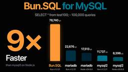
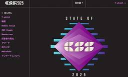
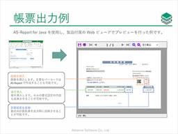
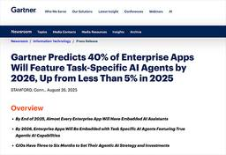

Publickey
https://www.publickey1.jp/
Enterprise ITに軸足を置き、新たにIT業界を変えつつあるクラウドコンピューティングやHTML5など最新の話題を、ブロガー独自の分析を交え、充実した記事で紹介するブログです。毎日更新しています。
フィード
アトラシアン「AI時代の業務のためのブラウザを作る」、The Browser Company買収を発表。ArcやDiaの開発元
Publickey
アトラシアンは、次世代ブラウザのArcやDiaなどの開発元である「The Browser Company」の買収を発表しました。 アトラシアン共同創業者兼CEOのマイク・キャノン・ブルックス（Mike Cannon-Brookes）氏は、「...
2日前

JavaScriptランタイムのBunがユニバーサルなデータベースクライアントに。Bun.SQL命令ででMySQL/PosgrerSQL/SQLiteをサポート
Publickey
JavaScriptランタイム「Bun」の最新バージョンとなる「Bun v1.2.21」がリリースされ、BunがMySQL/PostgreSQL/MySQLを単一のBun.SQL命令でサポートするユニバーサルなデータベースクライアントとなる...
2日前
GitHub、仕様駆動開発のワークフローを生成AIで実現するオープンソース「Spec Kit」を公開 140
140
Publickey
GitHubは、GitHub CopilotやClaude Code、Gemini CLIなどの生成AIを用いたコーディングエージェントで仕様駆動開発と呼ばれる開発スタイルのワークフローを実現するオープンソースソフトウェア「Spec Kit...
3日前

CSSで最も使われているフレームワークはTailwind、2位はBootstrap。レイアウトで苦労しているのはCSS Gridなど。State of CSS 2025
Publickey
CSSに関するアンケートを全世界のソフトウェアデベロッパーが回答した結果をまとめた最新の結果「State of CSS 2025」が発表されました。 CSSはHTMLで記述されたWebページのスタイルを設定するためのプログラミング言語の一種...
4日前

JavaでのPDF帳票の開発と出力、難しくないですか？ Excelが使えれば帳票がデザインできるシンプルなJavaライブラリ「AS-Report for Java」［PR］
Publickey
Java言語で開発される業務アプリケーションの多くで、請求書や見積書などの帳票出力機能が実装されるでしょう。 最近の帳票出力の多くはPDFファイルの生成によって実装されますが、JavaでPDFファイルによる帳票を生成しようとすると、意外と手...
5日前
Google Cloud、FirestoreのMongoDB互換機能を正式リリース。MongoDB関連のソフトウェアがFirestoreで利用可能に
Publickey
Google Cloudは、マネージドデータベースとして提供しているCloud Firestoreの新機能としてMongoDBとの互換機能を正式リリースしたことを発表しました。 Firebase now offers Firestore E...
5日前

今年（2025年）末には、ほぼすべての企業向けアプリにAIアシスタントが組み込まれるだろうとガートナーが予測
Publickey
米調査会社のガートナーは、企業向けアプリケーションにおけるAI機能の進化に関する予測を発表しました。 ガートナーの主な予測は以下の通りです。 2025末までにほぼすべての企業向けアプリケーションにAIアシスタント機能が搭載される 2026年...
5日前
AI駆動開発ツール：コーディングエージェントとTextToAppまとめ（2025年9月版） 199
Publickey
アプリケーション開発の生産性向上において、AIによるプログラミング支援ツールやサービスは欠かせないものになろうとしていますが、一方でこの分野にはさまざまなベンダから新製品やサービスが続々と投入され続けており、その全体像を把握するのが難しくな...
6日前
AI駆動開発ツール：コーディングアシスタントツールまとめ（2025年9月版） 142
Publickey
アプリケーション開発の生産性向上において、AIによるプログラミング支援ツールやサービスは欠かせないものになろうとしていますが、一方でこの分野にはさまざまなベンダから新製品やサービスが続々と投入され続けており、その全体像を把握するのが難しくな...
6日前

国内クラウド市場、2024年は9兆7000億円。5年後には約2倍の19兆2000億円規模に。IDC Japan
Publickey
調査会社のIDC Japanは国内クラウド市場予測を発表しました。発表によると昨年（2024年）の国内クラウド市場は売上額ベースで、前年比29.2％増の9兆7084億円。 これが年平均14.6％成長により5年後の2029年には約2倍の19兆...
10日前
NVIDIA、分散した複数のデータセンターを束ねた巨大なAIスーパーコンピュータを実現、長距離通信に最適化したネットワーク「NVIDIA Spectrum-XGS Ethernet」発表
Publickey
NVIDIAは分散した複数のデータセンターを束ねることで、巨大な仮想的AIスーパーコンピュータを実現するための高速なネットワーク技術「NVIDIA Spectrum-XGS Ethernet」を発表しました。 NVIDIA introduc...
11日前
そのコードはなぜそうなっているのか、AIとの対話記録によりコードのコンテキストを保存する。オープンソースのコードエディタ「Zed」が新記録機能「DeltaDB」の開発表明
Publickey
オープンソースとして開発されている高速なコードエディタ「Zed」の開発元であるZed Industries社は、Zedの新機能としてAIへの指示やAIによるコード編集の内容を詳細に保存する「DeltaDB」の開発意向を表明しました。 Zed...
12日前
Web標準の「Baseline」チェックにJetBrains IDEsが対応。Chrome DevToolsもCSSプロパティのBaseline表示に対応
Publickey
Web標準はリビングスタンダードとしてつねにアップデートが行われており、ChromeやFirefox、Safariなどの主要なWebブラウザは、Web標準で新たに策定される機能をそれぞれ実装し、最新版に反映させています。 ただしその実装時期...
13日前
Pythonに関する年次調査、仕事としてのPython経験は半数が2年以内、WebフレームワークはFastAPIが急伸で1位に。The State of Python 2025
Publickey
JetBrainsとPython Software Foundationは、3万人以上のPython開発者に対するアンケートを基にしたPythonに関する年次調査結果「The State of Python 2025」を発表しました。 ここ...
17日前
プロンプトからアプリを生成する「v0」がエージェント機能を備えたアプリ開発サービスに
Publickey
Next.jsの開発元として知られるVercelは、自然言語のプロンプトからアプリを生成するサービス「v0」を刷新し、エージェント機能を備えたアプリ開発サービスになったことを明らかにしました。 これまでのv0は、プロンプトとして作成したいア...
18日前